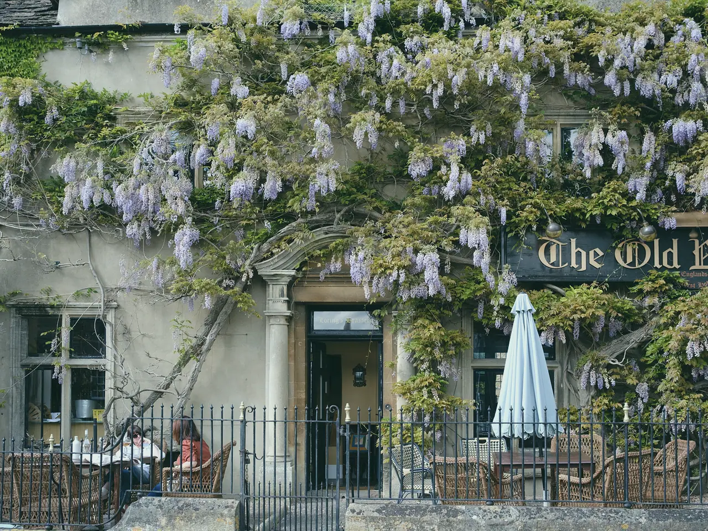

Somerton and King's Sutton
North through Somerton Deep Lock, the deepest on the Oxford, to a winding hole at Twyford Wharf and back.
- Miles
- 21
- Locks
- 11
- Nights
- 3
- Longest day
- 4 h 10
Somerton and King's Sutton: 21 miles, 11 locks, 3 nights, longest day 4 h 10.
A first weekend. Lots of lock practice, never more than five hours in a day.
| Day | From and to | Miles | Locks | Hours |
|---|---|---|---|---|
| Day 1Fri | Withybed Wharf to Somerton | 2.0 | 2 | 1 h 05 |
| Day 2Sat | Somerton to King's SuttonTurn at Twyford Wharf | 10.0 | 4 | 4 h 10 |
| Day 3Sun | King's Sutton to Somerton | 7.0 | 3 | 2 h 55 |
| Day 4Mon | Somerton to Withybed WharfBack by 09:30 | 2.0 | 2 | 1 h 05 |
Stops along the way
- Withybed Wharfthe wharf
- Somerton Deep Lockmile 2 · About 12 ft: the deepest lock on the canal
- Aynho Weir Lockmile 4.5
- King's Suttonmile 9
- Twyford Wharfmile 10.5 · Winding hole, 60 ft maximum
Boats that suit it
Turns at Twyford Wharf, which takes boats up to 60 ft: boats up to 60 ft.
- Dabchick2 berths · 45 ft
- Kingfisher4 berths · 52 ft
- Moorhen4 berths · 57 ft
- Reed Warbler6 berths · 60 ft
Price this route Weekend break from £395 in low season